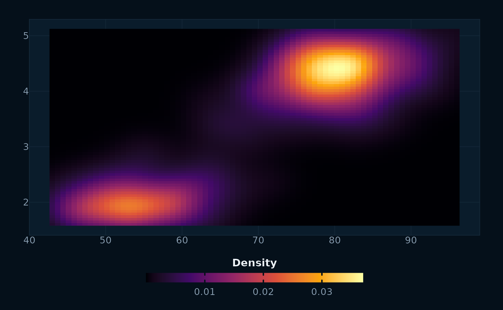

ggplot2::guide_colourbar() sized from the theme's legend key produces a bar
roughly two centimetres long — far too short for a continuous legend, whose
break labels then collide into an unreadable smear. This returns a colourbar
with proportions that suit a full-width figure: long, thin, and centred under
its title.
Pair it with a categorical key placed at the right, so a continuous ramp and a geography key never compete for the same strip:
Usage
guide_ps_colourbar(
length = 8,
thickness = 0.35,
position = c("bottom", "top", "right", "left"),
...
)Arguments
- length
Numeric. Long dimension of the bar, in centimetres. Default 8.
- thickness
Numeric. Short dimension of the bar, in centimetres. Default 0.35.
- position
Where the bar sits:
"bottom"(default),"top","right"or"left". The long dimension follows the orientation automatically.- ...
Passed to
ggplot2::guide_colourbar().
Examples
library(ggplot2)
ggplot(faithfuld, aes(waiting, eruptions, fill = density)) +
geom_raster() +
scale_fill_viridis_c(option = "inferno", name = "Density",
guide = guide_ps_colourbar()) +
theme_ps_map()
